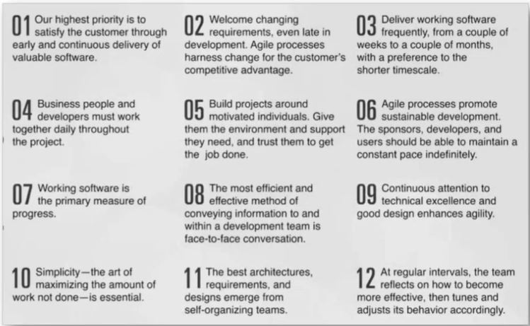

Workshop scrum en agile
De workshop scrum en agile werd gegeven door BlinkLane. Hier werd eerst informatie gegeven over agile en scrum. Daarna hebben we met teams twee sprints uitgevoerd, daarbij leerden we op een agile manier werken.
Agile
Agile in een innoverende wereldInnovatie staat bij 80% van de top organisaties als top-3 prioriteit. Snelheid is het belangrijkste hierbij. Er wordt ontzettend veel geld in geïnvesteerd, maar er zijn toch veel falende innovatie projecten. Er zijn steeds meer veranderingen en concurrentie op gebied van technologisch werken gaande. Software wordt steeds belangrijker in organisaties. Daarbij is te zien dat de snelheid waarop nieuwe technologieën in een organisatie worden gebruikt heel belangrijk is. Zo kunnen bedrijven hun concurrentie voorlopen en blijven voldoen aan hun klantbehoefte. Om snelheid en efficiëntie te kunnen waarborgen zijn Lean en Agile projecten heel belangrijk.
Agile past goed bij de veranderende wereld. Er zijn toenemende technische ontwikkelingen, globalisering en bijvoorbeeld corona. Hierdoor wordt de wereld steeds veranderlijker en onvoorspelbaarder en onzekerder. Agile werken is een manier om met die onzekerheid om te gaan. Agile werken zorgt ervoor dat je continu de beste waarde kan leveren aan de klant en niet meer hetzelfde doen als 10 jaar geleden. Grote reorganisaties zijn ook niet meer nodig door agile werken.
Agile werkenEr wordt empirisch en iteratief gewerkt in plaats van een groot plan gemaakt telkens. Dit houdt in dat er continu gecheckt wordt of het plan nog correct is, of het product nog aan de behoefte van de klant voldoet (zo nee: hoe moet er bijgestuurd worden om weer relevant genoeg te zijn?). het proces naar het eindproduct is kleiner, dus er wordt eerder voordeel aan behaald. Ook blijft het plan relevant, omdat er tijdens een lang proces ondertussen al veel dingen veranderen op de markt. Bij agile werken krijg je ondertussen veel feedback van je markt, dus je weet wat je oplevert aan je klanten en hoe zij er op reageren. Agile is geen methode maar een gedachtegoed, waar verschillende tools bij zijn om het uit te voeren.
Scrum
Product backlog:alle stukjes werk wat het team moet gaan opleveren om het eindproduct op te leveren uiteindelijk. Deze staan geprioriteerd op basis van waarden. Eerst oppakken: wat het meeste waarde levert en het minste kost. Op basis daarvan wordt een prioriteitenlijst gemaakt.
Sprint: wordt ongeveer elke twee weken gehouden. wat ga je oppakken met je team en welke doelen heb je daarbij om de sprint te behalen. Op bais daarvan sprint backlog. In sprint ga je aan de slag en deze dingen maken die je van plan was te gaan doen.
Daily stand up:zijn we de juiste dingen aan het doen, moeten we nog bijsturen, moeten we elkaar ergens bij helpen etc.
Sprint executie:uitvoering van het werk.
Sprint demo: uitvoeren van opgeleverde waarde. Stakeholders en klanten zien wat er tijdens de sprint is opgeleverd. Hier na krijg je feedback waarmee je kan testen of je de juiste dingen aan het doen bent om behoeften te vervullen of dat je de andere kant op moet.
Sprint retrosprective:ritueel waarmee je met team gaat zitten en evalueren hoe goed het tijdens de spring ging, hoe ging de samenwerking, hoe ging het proces, hebben we op elkaar afgestemd. Hoe ga je het de volgende sprint beter doen met elkaar. Als grootste doel hiervan is de meeste waarde leveren aan de klant.
Werk wordt in stukjes gehakt om in te schatten hoeveel je als team kan opleveren tijdens een scrum werk. Er wordt gekeken naar capaciteit: wat je normaal als team aankan in een tijdseenheid qua werk. Daar ga je tijdens de sprintplanning over praten.
Kanban
Kanban is voor langere processen en om meer dienstgericht te werken. Hierbij ben je processen aan het stroomlijnen. To do, doing, done. In deze processen verdelen. Hierdoor zie je of je bijvoorbeeld teveel tegelijk aan het doen bent. Dan lever je minder waarde.
Uitvoeren van de sprints
Per team kregen we een bord, hierin gingen we sprints plannen, uitvoeren, een demo en een retrospectieve. Er waren verschillende story kaartjes (werk), waar een bepaalde waarde aan hing (hoeveel waarde levert het op). Storypoints moesten we koppelen aan elk kaartje, op basis van wat we er gezamenlijk van vonden (hoeveel werk het is om op te pakken). De kaartjes die we wilden oppakken zetten we neer bij de sprint planning. Er zijn twee minuten voor elke sprint. Je moet goed inschatten wat realistisch is om te maken voor elke sprint. Als de uitvoering plaats gaat vinden worden de vragen laten zien. Daarvoor hebben we twee minuten de tijd. Dan gaan we de antwoorden op de vragen invullen bij de sprintplaning. Na twee minuten wordt er gekeken hoeveel er opgeleverd is. De planning van hoeveel storypoints je van plan was te gaan doen en hoeveel business value dat vertegenwoordigd wordt vergeleken met de storypoints en business value na de uitvoer.
Inplannen duurt 6 minuten, uitvoeren duurt 2 minuten. Daarna gaan we in een gezamelijke demo kijken of we de goede antwoorden hebben gegeven en welke waarden daarbij horen. Tijdens het retrospective dat we ook samen doen vertellen we onze bevindingen en wat we meenemen in de volgende sprint.
Bevindingen sprints
Eerste ronde: geen storypoints toegewezen en een business value van 60 punten. In de 2 minuten hebben we geen goede antwoorden kunnen geven. We hadden hier teveel gepland om in de twee minuten af te krijgen. Ook hadden we geen taken verdeeld. Deze ronde was het ons niet gelukt om de kaartjes af te krijgen.
Tweede ronde: voor de tweede ronde waren wij van plan om beter de taken te verdelen. Ook gingen wij nu de kaartjes met twee personen maken, in plaats van alleen. De bulletpoints per kaartje hadden we over de personen verdeeld. Jan-Willem gaf aan dat hij verantwoordelijk wilde zijn voor het optellen en uitrekenen van de totale score van de kaartjes en ook het invullen van de goede antwoorden. Hierdoor hadden we meer tijd over.
Agile tijdens het project

De agile principes die tijdens ons project worden toegepast: 4. Nauw contact houden met onze opdrachtgever. We spreken onze opdracht elke week in een Teams meeting. Ook hebben we contact via de mail en WhatsApp. We hebben een aantal keer een extra meeting gepland om dingen te bespreken waar nodig 5. Onze opdrachtgever geeft ons zoveel mogelijk informatie om het project goed te kunnen uitvoeren. Bijvoorbeeld presentaties die we kunnen gebruiken, ook zorgt hij voor contactpersonen waar we presentaties aan kunnen geven. Dit zorgt ervoor dat wij gemotiveerd raken.
Conclusie
Het was een leuke en leerzame workshop. De technieken die we hebben geleerd konden we meteen toepassen tijdens de korte sprints van twee minuten. Dit was erg leerzaam en hiervan kreeg ik ook energie, omdat het een interactieve workshop was. Ook zal ik de gekregen informatie meenemen naar het project. Zo kunnen we bijvoorbeeld bepaalde taken een waarde geven en inschatten hoelang deze zullen duren om af te maken.